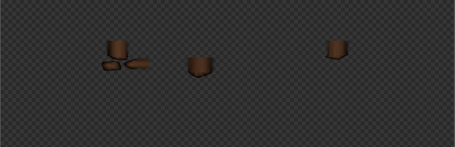

Export A Transparent Overlay¶
Applies to: Parting Placer V2.0.0 · Blender 4.4 · 5.2
Save one PNG of your partings with see-through edges, ready to layer over a scalp texture in a game engine.
You Need First
Steps¶
- Open the Bake box.
- Tick Color.
- Tick Alpha.
- Select Bake Partings.
- Leave the bit depth on 8-bit.
- Leave Premultiplied off, unless your engine asks for premultiplied alpha.
- Select Save Transparent.
- Pick a folder.
- Confirm the folder.
The file uses this head's UV layout, so it only fits this head.

The status bar message after saving says where the colour came from. If it mentions re-baking, bake once more and save again.
The file is named after the head, for example head_Partings_Transparent.png.
If You're Stuck
- Save Transparent is greyed out? See Save Transparent Is Unavailable.
- A pale edge round the partings? See The Transparent Export Has A Pale Or Skin-Coloured Edge.
- 16-bit looks no different? See 16-bit Export Looks The Same And The File Is Much Bigger.
Recommended next: Save And Switch Parting Styles